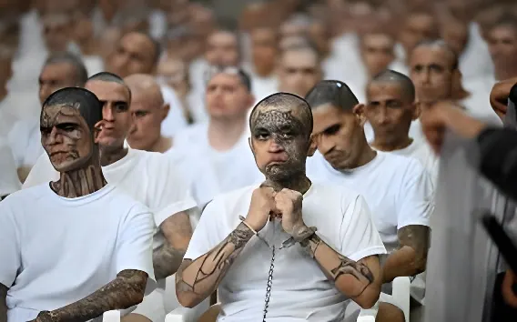

Depuis le 20 avril 2026, El Salvador est le théâtre du plus grand procès pénal de son histoire : 486 membres présumés de la Mara Salvatrucha (MS-13), dont 22 chefs historiques, comparaissent simultanément pour plus de 47 000 délits. Vitrine de la politique sécuritaire de Bukele, cette procédure inédite cristallise le débat entre efficacité répressive et respect des garanties judiciaires fondamentales.
Le lundi 20 avril 2026, la justice salvadorienne ouvre un procès d'une ampleur inédite. Qualifié de premier procès collectif contre une structure de commandement de gang dans l'histoire du pays, il rassemble 486 membres présumés de la Mara Salvatrucha (MS-13), la puissante organisation criminelle classée comme terroriste par les États-Unis depuis février 2025.
En raison du volume exceptionnel d'accusés, la procédure adopte un format hybride : 413 d'entre eux comparaissent virtuellement depuis différentes prisons — plus de 250 depuis le CECOT (Centre de Confinement du Terrorisme) — tandis que 73 sont jugés par défaut, étant en fuite. Dans la salle principale du CECOT, à Tecoluca, quelque 220 détenus, menottés aux pieds et aux mains, vêtus d'un tee-shirt et d'un short blancs, ont écouté dans un épais silence les témoignages retransmis par haut-parleurs, selon les reporters de l'AFP présents sur place.
Le parquet salvadorien, dirigé par le procureur Max Muñoz, impute aux 486 prévenus un total de plus de 47 000 délits commis entre 2012 et 2022, dont plus de 29 000 assassinats avérés. Parmi les crimes les plus emblématiques retenus figure le massacre du week-end du 25 au 27 mars 2022 : 86 à 87 meurtres en 72 heures, revendiqués par les gangs, qui avait déclenché la déclaration de l'état d'exception par Bukele.
Les 486 accusés répondent notamment de meurtres commandités, d'assassinats de femmes (féminicides), d'extorsions, de trafic d'armes, de viols et de rébellion visant à instaurer un État parallèle par le contrôle territorial. Le parquet a requis la peine de prison maximale pour chaque chef d'accusation — ce qui signifie qu'un accusé reconnu coupable de tous les chefs pourrait théoriquement écoper de 245 ans d'emprisonnement.
Au cœur du procès se trouvent les 22 membres de la Ranfla Nacional — la direction stratégique de la MS-13 —, auxquels sont directement imputés quelque 9 000 crimes. Ces chefs historiques ont été répartis dans trois salles plus petites du CECOT pour des raisons de sécurité. Parmi les plus notoires :
L'un des dirigeants les plus influents de la Ranfla Nacional. A participé à la trêve négociée avec le gouvernement salvadorien en 2012–2014. A écouté les accusations sans esquisser le moindre geste, selon l'AFP.
Autre figure centrale de la direction de la MS-13. Également présent lors des négociations de la tregua de 2012. A maintenu un mutisme total lors des audiences.
Dirigeait l'une des « clicas » (cellules locales) les plus violentes de la MS-13. Jugé parmi les accusés présents dans la grande salle. Connu pour des regards intimidants lancés aux journalistes présents.
Dès les premières audiences, des témoins protégés ont pris la parole pour décrire le fonctionnement interne du gang. Plusieurs ont relaté, sous anonymat, des scènes de tortures, d'exécutions sommaires et de massacres orchestrés de manière systématique. Le procureur Max Muñoz a qualifié la MS-13 de « conglomérat criminel » ayant agi à travers une chaîne de commandement structurée, comparable à une organisation paramilitaire.
Des résultats d'autopsies, des preuves forensiques et des témoignages de survivants ont été présentés en salle d'audience, documentant l'étendue des violences commises entre 2012 et 2022, période durant laquelle les gangs ont exercé un contrôle territorial sur jusqu'à 80 % du territoire national salvadorien, selon les chiffres avancés par le gouvernement Bukele.
La dimension politique du procès est clairement assumée par le président Nayib Bukele. Présent lors d'une partie des audiences, il a publié sur le réseau social X une comparaison explicite entre ce procès de masse et les procès de Nuremberg de 1945–1946, invoquant le principe de la « responsabilité de commandement » pour justifier la mise en cause collective des chefs de gangs.
« Il n'y a rien de fondamentalement nouveau dans cette procédure : cela s'appelle la ''responsabilité de commandement'', et ce principe a été appliqué en Europe lors des procès de Nuremberg. »
— Nayib Bukele, sur X (Twitter), avril 2026Cette comparaison a immédiatement suscité des réactions vives. Kenneth Roth, ancien directeur de Human Rights Watch, a dénoncé le procès comme un « procès collectif injuste », soulignant l'impossibilité d'assurer une défense individuelle dans un tel format. Bukele lui a répondu directement : « Ils n'étaient pas des ''présumés membres de bandes'' pour leurs victimes. Ils n'étaient pas des ''civils'' pour les communautés qui ont vécu sous leur contrôle pendant des décennies. »
Au-delà de la polémique autour de Nuremberg, le procès des 486 concentre des critiques juridiques précises. Les organisations de défense des droits humains — Amnesty International, Human Rights Watch, CRISTOSAL — pointent plusieurs problèmes structurels :
Premièrement, la capacité effective de défense : avec 486 accusés comparaissant simultanément pour des dizaines de milliers de chefs d'accusation distincts, la possibilité pour chaque défendeur d'être représenté de manière individuelle est sérieusement compromise. Deuxièmement, le contexte judiciaire global est fragilisé : depuis 2021, Bukele a recomposé la Cour suprême en destituant ses magistrats, ce qui compromet l'indépendance du pouvoir judiciaire. Troisièmement, les 91 000 arrestations opérées depuis mars 2022 sous état d'exception — dont Bukele a lui-même reconnu que des innocents figuraient parmi les détenus — posent la question de la fiabilité des procédures d'identification des suspects.
Ce procès intervient dans un El Salvador méconnaissable par rapport à la situation d'avant 2022. Le taux d'homicides a chuté de manière spectaculaire : 1,3 pour 100 000 habitants en 2025, contre 103 pour 100 000 en 2015 (et 7,8 en 2022), selon les chiffres officiels salvadoriens. Le pays, autrefois considéré comme le plus meurtrier du monde, revendique désormais l'un des taux de criminalité violente les plus bas d'Amérique latine.
| Indicateur | Avant (2015–2022) | 2025–2026 |
|---|---|---|
| Homicides / 100 000 hab. | 103 (2015) / 7,8 (2022) | 1,3 |
| Personnes arrêtées (état d'exception) | — | ~91 500 |
| Contrôle territorial gangs | ~80 % du territoire | Très affaibli |
| Approbation Bukele | ~70 % | ~93 % |
| MS-13 — statut USA | Organisation criminelle | Organisation terroriste (fév. 2025) |
Le procès des 486 dépasse les frontières salvadoriennes. Il constitue potentiellement un précédent juridique majeur dans la manière dont des États confrontés à des violences extrêmes peuvent répondre judiciairement à des organisations criminelles structurées en hiérarchies de commandement. La question posée est celle de la compatibilité entre la logique de « responsabilité de commandement » — traditionnellement appliquée dans les tribunaux pénaux internationaux — et les garanties individuelles que protège le droit pénal ordinaire.
Par ailleurs, la décision de Donald Trump de classer la MS-13 comme organisation terroriste en février 2025, et l'accord conclu entre Washington et San Salvador permettant le transfert de déportés américains vers le CECOT, inscrivent ce procès dans un contexte géopolitique plus large de convergence entre les politiques sécuritaires des deux pays.
« Ces individus ont pendant de nombreuses années apporté le deuil et la douleur à notre société. »
— Belarmino García, directeur du CECOT, à la presse, 24 avril 2026Le 20 avril 2026, en alignant 486 accusés dans les salles du CECOT, El Salvador n'a pas seulement ouvert un procès — il a posé une question que le droit international n'a pas encore tranchée. Peut-on répondre à une décennie de terreur systématique par une justice elle-même systématique, collective, expéditive ? La MS-13 a régné sur des quartiers entiers par la peur ; le gouvernement Bukele lui répond par un appareil judiciaire qui en adopte, selon ses critiques, certaines logiques d'exception. Ce procès ne se conclura pas avec un verdict : il restera ouvert, comme une blessure dans la mémoire salvadorienne, entre le soulagement d'une société qui respire à nouveau et la question sans réponse simple de savoir à quel prix cette paix a été achetée.
Desde el 20 de abril de 2026, El Salvador es escenario del mayor proceso penal de su historia : 486 presuntos miembros de la Mara Salvatrucha (MS-13), incluidos 22 jefes históricos, comparecen simultáneamente por más de 47 000 delitos. Escaparate de la política de seguridad de Bukele, este procedimiento inédito cristaliza el debate entre eficacia represiva y respeto a las garantías judiciales fundamentales.
El lunes 20 de abril de 2026, la justicia salvadoreña abre un proceso de amplitud inédita. Calificado como el primer juicio colectivo contra una estructura de mando de pandilla en la historia del país, reúne a 486 presuntos miembros de la Mara Salvatrucha (MS-13), la poderosa organización criminal clasificada como terrorista por Estados Unidos desde febrero de 2025.
Dado el volumen excepcional de acusados, el procedimiento adopta un formato híbrido : 413 de ellos comparecen virtualmente desde distintas cárceles — más de 250 desde el CECOT (Centro de Confinamiento del Terrorismo) — mientras que 73 son juzgados en rebeldía, al encontrarse prófugos. En la sala principal del CECOT, en Tecoluca, unos 220 detenidos, esposados de pies y manos, vestidos con camiseta y pantalón corto blancos, escucharon en un espeso silencio los testimonios transmitidos por altavoces, según los enviados de la AFP presentes en el lugar.
La Fiscalía salvadoreña, dirigida por el fiscal Max Muñoz, imputa a los 486 imputados un total de más de 47 000 delitos cometidos entre 2012 y 2022, de los cuales más de 29 000 son asesinatos comprobados. Entre los crímenes más emblemáticos figura la masacre del fin de semana del 25 al 27 de marzo de 2022 : 86 a 87 asesinatos en 72 horas, reivindicados por las pandillas, que detonó la declaración del estado de excepción por parte de Bukele.
Los 486 acusados responden, entre otros delitos, de homicidios por encargo, asesinato de mujeres (femicidios), extorsiones, tráfico de armas, violaciones y rebelión orientada a instaurar un Estado paralelo mediante el control territorial. La Fiscalía ha pedido la pena máxima de cárcel para cada cargo — lo que significa que un acusado condenado por todos los cargos podría recibir teóricamente 245 años de prisión.
En el centro del proceso se hallan los 22 miembros de la Ranfla Nacional — la dirección estratégica de la MS-13 —, a quienes se imputan directamente unos 9 000 crímenes. Estos jefes históricos fueron distribuidos en tres salas más pequeñas del CECOT por razones de seguridad. Entre los más conocidos :
Uno de los dirigentes más influyentes de la Ranfla Nacional. Participó en la tregua negociada con el gobierno salvadoreño en 2012–2014. Escuchó las acusaciones sin hacer ningún gesto, según la AFP.
Otra figura central de la dirección de la MS-13. También presente en las negociaciones de la tregua de 2012. Mantuvo un mutismo total durante las audiencias.
Dirigía una de las « clicas » (células locales) más violentas de la MS-13. Juzgado entre los acusados presentes en la sala grande. Conocido por las miradas intimidatorias lanzadas a los periodistas presentes.
La dimensión política del juicio es abiertamente asumida por el presidente Nayib Bukele. Presente durante parte de las audiencias, publicó en la red social X una comparación explícita entre este proceso de masas y los juicios de Núremberg de 1945–1946, invocando el principio de la « responsabilidad de mando » para justificar la imputación colectiva de los jefes de pandillas.
« No hay nada fundamentalmente nuevo en este procedimiento : se llama ''responsabilidad de mando'', y este principio fue aplicado en Europa durante los juicios de Núremberg. »
— Nayib Bukele, en X (Twitter), abril de 2026Esta comparación suscitó reacciones inmediatas. Kenneth Roth, ex director de Human Rights Watch, denunció el juicio como un « juicio colectivo injusto », señalando la imposibilidad de garantizar una defensa individual en tal formato. Bukele le respondió directamente : « No eran ''presuntos pandilleros'' para sus víctimas. No eran ''civiles'' para las comunidades que vivieron bajo su control durante décadas. »
Más allá de la polémica sobre Núremberg, el juicio de los 486 concentra críticas jurídicas precisas de organizaciones como Amnesty International, Human Rights Watch y CRISTOSAL. Señalan tres problemas estructurales principales : la imposibilidad de asegurar una defensa individual efectiva para cada uno de los 486 acusados ; la falta de independencia judicial tras la destitución de los magistrados de la Corte Suprema en 2021 ; y las dudas sobre la fiabilidad de los procedimientos de identificación de sospechosos en el marco de un estado de excepción que ha generado más de 91 000 detenciones, entre las cuales el propio Bukele ha reconocido que hay inocentes.
Este juicio se produce en un El Salvador irreconocible respecto a la situación anterior a 2022. La tasa de homicidios ha caído de manera espectacular : 1,3 por 100 000 habitantes en 2025, frente a 103 por 100 000 en 2015 (y 7,8 en 2022), según las cifras oficiales salvadoreñas. El país, considerado antes el más violento del mundo, reivindica ahora una de las tasas de criminalidad violenta más bajas de América Latina.
| Indicador | Antes (2015–2022) | 2025–2026 |
|---|---|---|
| Homicidios / 100 000 hab. | 103 (2015) / 7,8 (2022) | 1,3 |
| Personas detenidas (estado exc.) | — | ~91 500 |
| Control territorial pandillas | ~80 % del territorio | Muy debilitado |
| Aprobación Bukele | ~70 % | ~93 % |
| MS-13 — estatus EE. UU. | Organización criminal | Organización terrorista (feb. 2025) |
« Estos individuos han traído el luto y el dolor a nuestra sociedad durante muchos años. »
— Belarmino García, director del CECOT, a la prensa, 24 de abril de 2026El 20 de abril de 2026, al alinear a 486 acusados en las salas del CECOT, El Salvador no abrió simplemente un juicio — planteó una pregunta que el derecho internacional aún no ha resuelto. ¿Puede responderse a una década de terror sistemático con una justicia que es, ella misma, sistemática, colectiva, expeditiva? La MS-13 gobernó barrios enteros por el miedo ; el gobierno Bukele le responde con un aparato judicial que, según sus críticos, adopta algunas de las mismas lógicas de excepción. Este proceso no se cerrará con un veredicto : permanecerá abierto, como una herida en la memoria salvadoreña, entre el alivio de una sociedad que vuelve a respirar y la pregunta sin respuesta sencilla de saber a qué precio se compró esta paz.